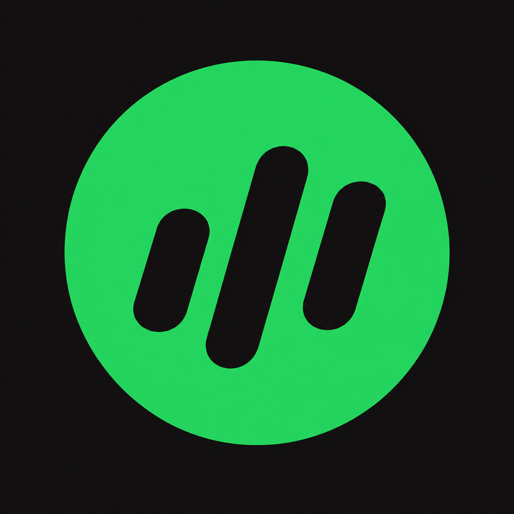

Fix a hung or crashed Spotify app in one click.
Every download has a .sha256 checksum file to verify integrity.
Looking for another version? All releases
Quits Spotify, deletes its cache. Keeps your login and playlists. Try this first — it fixed the bloated-cache hang in one shot.
Removes app data, preferences and caches. You'll be logged out — playlists re-sync automatically from the cloud.
Quits Spotify gracefully. If it won't quit, it force-kills the process —
including the stale SingletonLock left behind by a hung instance.
Deletes the right paths, nothing else. Cache locations per OS:
~/Library/Caches/com.spotify.client on macOS,
%APPDATA%\Spotify on Windows, ~/.cache/spotify on Linux.
Never touches your library. Playlists live in Spotify's cloud — they're never lost, even after a full reset.
xattr -d com.apple.quarantine ./unstuck_spotify